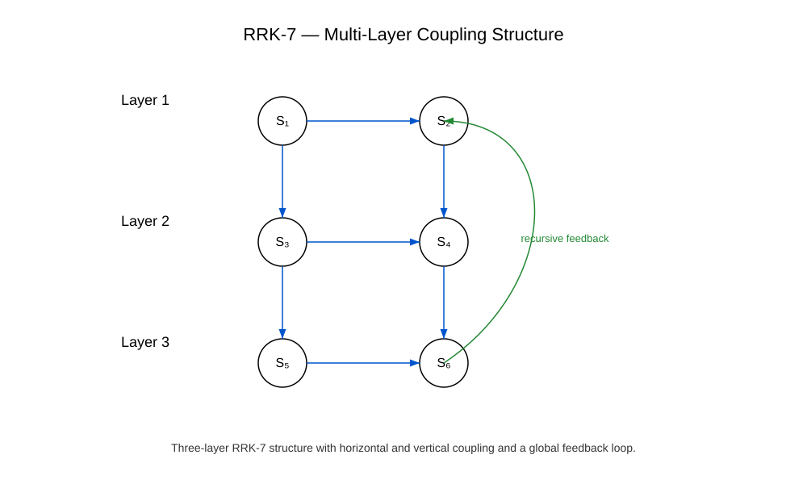

Figure 6 — Meta‑Intelligence Transition
Diese Figur zeigt den Übergang von Intelligenz zu Meta‑Intelligenz. Sie illustriert den rekursiven Tiefenpunkt, an dem ein System beginnt, seine eigenen Operatoren, Regeln und Strukturen meta‑rekursiv zu organisieren.